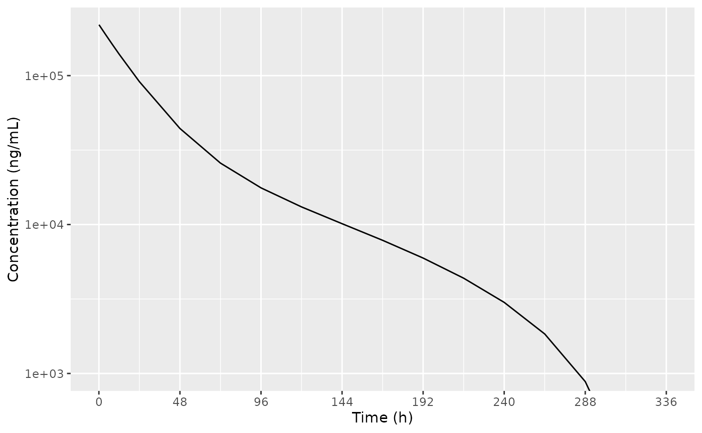
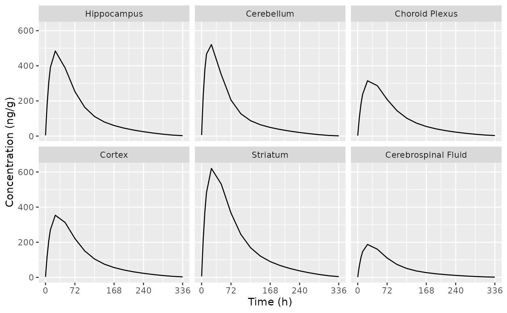

Trontinemab PK in plasma and brain (Grimm 2023)
Source:vignettes/Grimm_2023_trontinemab.Rmd
Grimm_2023_trontinemab.Rmd
library(nlmixr2lib)
library(dplyr)
#>
#> Attaching package: 'dplyr'
#> The following objects are masked from 'package:stats':
#>
#> filter, lag
#> The following objects are masked from 'package:base':
#>
#> intersect, setdiff, setequal, union
library(ggplot2)Simulate trontinemab PK in plasma and brain
Replicate figures 2 and 3 in the publication with a single 10 mg/kg dose to a cynomolgus monkey.
dSimDose <-
data.frame(
ID = 1,
AMT = 10, # mg/kg
WT = 5, # cynomologus monkey body weight according to the paper
TIME = 0,
EVID = 1,
CMT = "central"
)
dSimObs <-
data.frame(
ID = 1,
AMT = 0,
WT = 5,
TIME = c(5/60, 1, 2, 4, 8, 12, seq(24, 336, by = 24)),
EVID = 0,
CMT = "central"
)
dSimPrep <- dplyr::bind_rows(dSimDose, dSimObs)
Grimm2023 <- readModelDb("Grimm_2023_trontinemab")
# Set BSV to zero for simulation to get a reproducible result
dSim <- rxode2::rxSolve(Grimm2023 |> rxode2::zeroRe(), events = dSimPrep)
#> using C compiler: ‘gcc (Ubuntu 13.3.0-6ubuntu2~24.04) 13.3.0’
#> ℹ omega/sigma items treated as zero: 'bsv_fpla_cerebellum', 'bsv_fpla_hippocampus', 'bsv_fpla_striatum', 'bsv_fpla_cortex', 'bsv_fpla_choroid_plexus'Plot plasma PK
Replicate figure 2 from the paper.
ggplot(dSim, aes(x = time, y = sim)) +
geom_line() +
labs(
x = "Time (h)",
y = "Concentration (ng/mL)"
) +
scale_y_log10() +
scale_x_continuous(breaks = seq(0, 336, by = 48)) +
coord_cartesian(ylim = c(1e3, NA))
Plot brain PK
Replicate figure 3 from the paper.
d_plot_brain <-
dSim |>
as.data.frame() |>
select(time, starts_with("C", ignore.case = FALSE)) |>
select(-starts_with("Cbrain"), -Cc) |>
tidyr::pivot_longer(cols = -"time", names_to = "ASPEC", values_to = "AVAL") |>
mutate(
ASPEC =
factor(
gsub(x = ASPEC, pattern = "^C", replacement = ""),
levels = c("hippocampus", "cerebellum", "choroid_plexus", "cortex", "striatum", "csf"),
labels = c("Hippocampus", "Cerebellum", "Choroid Plexus", "Cortex", "Striatum", "Cerebrospinal Fluid")
)
)
ggplot(d_plot_brain, aes(x = time, y = AVAL)) +
geom_line() +
labs(
x = "Time (h)",
y = "Concentration (ng/g)"
) +
scale_x_continuous(breaks = c(0, 72, 168, 240, 336)) +
facet_wrap(~ASPEC)